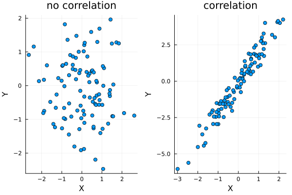
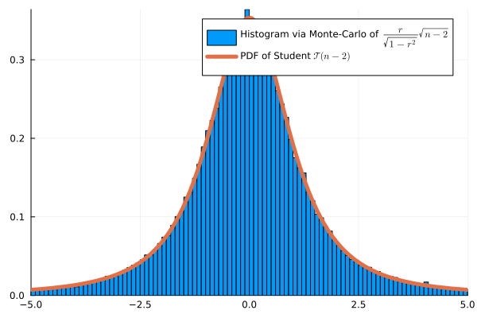
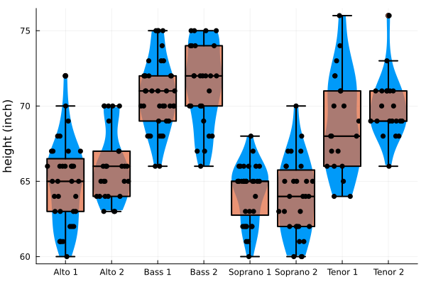
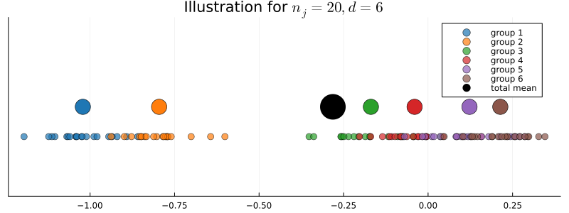
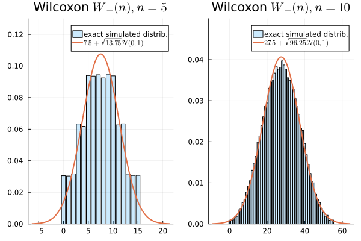

We observe iid paired data \((X_1, Y_1), \dots, (X_n,Y_n)\) of unknown means \(\mu_X, \mu_Y\) and unknown covariance matrix \(\Sigma\).
Let \(X = X_1\), \(Y = Y_1\).
\(\mathrm{Cov}(X,Y) = \mathbb{E}[(X - \mathbb{E}[X])(Y - \mathbb{E}[Y])]\)
\(H_0: \mathrm{Cov}(X,Y) = 0\) vs \(H_1: \mathrm{Cov}(X,Y) \neq 0\)
\(\sigma_X^2 = \mathrm{Cov}(X,X)\)
\(\sigma_Y^2 = \mathrm{Cov}(Y,Y)\)
\(\hat \rho(X,Y) = \dfrac{\mathrm{Cov}(X,Y)}{\sigma_X \sigma_Y}\)
[Wooclap]
Covariance matrix:
\[ \Sigma = \begin{pmatrix} \sigma_X^2 & \mathrm{Cov}(X,Y) \\ \mathrm{Cov}(X,Y) & \sigma_Y^2 \end{pmatrix} \]
We define their empirical versions:
\(\widehat{\mathrm{Cov}}(X,Y) = \frac{1}{n-1}\sum_{i=1}^n (X_i - \overline X)(Y_i - \overline Y)\)
\(\hat \sigma_X^2 = \frac{1}{n-1}\sum_{i=1}^n (X_i - \overline X)^2\)
\[\hat \rho(X,Y) = \frac{\widehat{\mathrm{Cov}}(X,Y)}{\hat \sigma_X \hat \sigma_Y}\]
Empirical vs. theoretical quantities
\(\hat \rho\), \(\hat \sigma_X\), \(\widehat{\mathrm{Cov}}\), … are empirical — they are computed from the data. Their counterparts \(\rho\), \(\sigma_X\), \(\mathrm{Cov}\), … are theoretical (population) quantities, which are generally unknown.
From the Cauchy-Schwarz inequality, we deduce that:
The correlation \(\hat \rho\) is always between \(-1\) and \(1\):
If \(\hat \rho = 1\): for all \(i\), \(Y_i = aX_i + b\) for some \(a > 0\)
If \(\hat \rho = -1\): for all \(i\), \(Y_i = aX_i + b\) for some \(a < 0\)
If \(\hat \rho = 0\): no linear relationship. notebook
Sample correlation:
\[\hat \rho = \frac{\sum_{i=1}^n (X_i - \overline X)(Y_i - \overline Y)}{\sqrt{\sum_{i=1}^n (X_i - \overline X)^2\sum_{i=1}^n (Y_i - \overline Y)^2}}\]
Test statistic:
\[\psi(X,Y) = \frac{\hat \rho}{\sqrt{1-\hat \rho^2}}\sqrt{n-2}\]
Under \(H_0\), if the data are Gaussian: \(\psi(X,Y) \approx \mathcal{T}(n-2)\)


Does study time correlate with exam scores?
| Student | Study time \(X_i\) (h) | Score \(Y_i\) (%) |
|---|---|---|
| 1 | 2 | 55 |
| 2 | 4 | 65 |
| 3 | 6 | 70 |
| 4 | 8 | 80 |
| 5 | 10 | 90 |
We denote \(X_i\) the study time of student \(i\) and \(Y_i\) its score.
We assume that \((X_1, \dots, X_n)\) iid \(\mathcal N(\mu_X, \sigma_X^2)\) and \((Y_1, \dots, Y_n)\) iid \(\mathcal N(\mu_Y, \sigma_Y^2)\) where \(\mu_X\), \(\mu_Y\), \(\sigma_X\), \(\sigma_Y\) are unknown.
We denote \(\rho = Cov(X,Y)\), also unknown. We want to test:
\(H_0: \rho = 0\) VS \(H_1: \rho \neq 0\)
Here \(\hat \rho =0.9948\) and \(\hat{\rho} = \frac{170}{\sqrt{40 \times 730}} \approx 0.9948, \qquad t = \frac{0.9948\sqrt{3}}{\sqrt{1-0.9948^2}} \approx 16.94\). Reject (there is presence of correlation)
Before: Correlation test between two quantitative variables \(Y\) and \(X\). What if \(X\) represents modalities ?
For example: \(Y\) represents salary and \(X\) the region.
Natural question: are salaries homogeneous across regions?
We observe
\((X_1, \dots, X_n) \in \{1, \dots I\}^n\) (modalities) \((Y_1, \dots, Y_n) \in \mathbb R^n\) (quantitative variables)
Assumption: \((Y_k,X_k)\) are independent, same variance, and if \(X_k=i\):
\(Y_k \sim \mathcal N(\mu_k, \sigma^2)\)
We can write:
\(\mu_i = \mathbb E[Y|X=i]=\frac{\mathbb E[Y\mathbf 1\{X=i\}]}{\mathbb P(X=i)}\) (unknown)
Are the \(Y\) homogeneous relative to modalities of \(X\)?
\(H_0: \mu_1=\dots = \mu_I\) VS \(H_1: \mu_i \neq \mu_j\) for some \(i,j\)
Warning
This is a test on the means not on the variances. variance is assumed to be constant across modalities.
We observe
\(Y_k = \sum_{i=1}^I\mathbf{1}\{X_k = i\} \mu_i + \sigma \varepsilon_k\)
where \(\varepsilon_k\) are iid \(\mathcal N(0,1)\)
We observe \(X=(X_1, \dots, X_n)\) and \(Y=(Y_1, \dots, Y_n)\), where
Boxplot: represents \(0, 25, 75\) and \(100\) percentiles.
\(X\): Height (in inches), \(Y\): Type of singer
Boxplot: (min, \(q_{1/4}\), \(q_{3/5}\), max) for each modality

\(X=(X_1, \dots, X_n) \in \{1, \dots, I\}^n\), \(Y=(Y_1, \dots, Y_n) \in \mathbb R^n\)
if \(i \in \{1, \dots, I\}\), we define partial means as
\(N_i = \sum_{k=1}^n \mathbf 1\{X_k=i\}\) and \(\overline Y_i = \frac{1}{N_i}\sum_{k=1}^n Y_k \mathbf 1\{X_k=i\}\)
Total mean:
\(\overline Y = \frac{1}{N}\sum_{k=1}^n Y_k = \frac{1}{N}\sum_{i=1}^I\sum N_i \overline Y_i\)
\[\frac{1}{n}\underbrace{\sum_{k=1}^n(Y_k - \overline Y)^2}_{SST} = \frac{1}{n}\underbrace{\sum_{i=1}^IN_i(\overline Y_i - \overline Y)^2}_{SSB} + \frac{1}{n}\underbrace{\sum_{k=1}^n\mathbf 1\{X_k=i\}(Y_k - \overline Y_i)^2}_{SSW}\]
correlation ratio:
\[ \hat \eta^2 = \frac{SSB}{SST} \in [0,1]\]
This is an estimator of unknown \(\eta = \frac{\mathbb V(\mathbb E[Y|X])}{\mathbb V(Y)}\)
Model: \(Y_k = \mu + \varepsilon_k\), \(\varepsilon_k \overset{iid}{\sim} \mathcal{N}(0, \sigma^2)\), i.e. \(\mu_1 = \cdots = \mu_I = \mu\) (unknown).
Proposition
Under \(H_0\), assuming \(\varepsilon_k \overset{iid}{\sim} \mathcal{N}(0,\sigma^2)\):
\[\frac{SSB}{\sigma^2} \sim \chi^2(I-1), \qquad \frac{SSW}{\sigma^2} \sim \chi^2(n-I)\]
and \(SSB \perp SSW\). Consequently,
\[F = \frac{SSB/(I-1)}{SSW/(n-I)} \sim \mathcal{F}(I-1,\, n-I)\]
Degrees of freedom have an intuitive interpretation:
Fisher test: reject \(H_0\) at level \(\alpha\) when
\[F > f_{1-\alpha}(I-1,\, n-I)\]
where \(f_{1-\alpha}(I-1, n-I)\) is the \((1-\alpha)\)-quantile of \(\mathcal{F}(I-1, n-I)\).
Test Statistic
\[\psi(X,Y) = \frac{SSB/(I-1)}{SSW/(N-I)}\]
\(\psi(X,Y) \sim \mathcal F(I-1, N-I)\) under \(H_0\)

Before: Pearson correlation between quantitative variables \(X_i\)’s and \(Y_i\)’s
But what if \(X_i\) and \(Y_i\) represents two modalities of individual \(i\)?
example: social category and region, political opinion and age group, religion and country…
Think of modalities of \(Y\) as “bags” and modalities of \(X\) as “colors”.
This is just a representation, we can take \(X\) for the bags
Then, a sampling a population is like drawing balls from bags.
We get a multinomial distribution
We observe \(X=(X_1, \dots, X_n)\) iid and \(Y=(Y_1, \dots, Y_n)\) iid, where
| Category X/Y | Bag 1 | Bag 2 | Bag 3 | Totals |
|---|---|---|---|---|
| Col 1 | \(n_{11}\) | \(n_{12}\) | \(n_{13}\) | \(R_1\) |
| Col 2 | \(n_{21}\) | \(n_{22}\) | \(n_{23}\) | \(R_2\) |
| Totals | \(N_1\) | \(N_2\) | \(N_3\) | \(N\) |
\(n_{ij}\): number of individuals having category \(i\) for \(X\) and \(j\) for \(Y\)
The dataset contains air quality measurements at various traffic monitoring stations. We study two qualitative variables:
contingency table of variable “Type” and “Fluidity”
| Fluidity/Type | P | U | A | T | V |
|---|---|---|---|---|---|
| A | 21 | 21 | 19 | 9 | 9 |
| B | 20 | 17 | 16 | 8 | 7 |
| C | 17 | 17 | 16 | 8 | 7 |
| D | 20 | 20 | 18 | 8 | 8 |
In R: table(X,Y)
Are the bags homogeneous?
Is there a dependency between \(X\) and \(Y\)?
\(d\) different groups (bags), each containing balls of \(m\) potential colors.
If \(d = 3\) and \(m = 2\), we observe the following \(2\times 3\) table of counts:
| bag 1 | bag 2 | bag 3 | Total | |
|---|---|---|---|---|
| color 1 | \(n_{11}\) | \(n_{12}\) | \(n_{13}\) | \(R_1\) |
| color 2 | \(n_{21}\) | \(n_{22}\) | \(n_{23}\) | \(R_2\) |
| Total | \(N_1\) | \(N_2\) | \(N_3\) | \(N\) |
In bag \(j\):
\((X_{1j}, X_{2j}, \dots, X_{mj}) \sim \mathrm{Mult}(N_j, (p_{1j}, p_{2j}, \dots, p_{mj}))\)
The parameters \(p_{ij}\) are unknown [Wooclap]
\(H_0\): \(p_{i1} = p_{i2} = \dots = p_{id}\) for all color \(i\) (bags are homogeneous)
\(H_1\): bags are heterogeneous
Under \(H_0\), we write \(p_i = p_{i1} = p_{i2} = \dots = p_{id}\).
Then we can estimate
\(\hat{p}_{i} = \tfrac{1}{N}\sum_{j=1}^{d}X_{ij} = \dfrac{R_i}{N}\)
We define the test statistic as:
\[\psi(X) = \sum_{i=1}^m\sum_{j=1}^d \frac{(n_{ij}- N_j\hat{p}_{i})^2}{N_j\hat{p}_{i}} \;\asymp\; \chi^2\!\left((m-1)(d-1)\right)\]
Proposition
Under \(H_0\), as \(N \to \infty\) with \(N_j/N \to \lambda_j > 0\),
\[\psi(X) = \sum_{i=1}^m\sum_{j=1}^d \frac{(n_{ij} - N_j\hat{p}_{i})^2}{N_j\hat{p}_{i}} \xrightarrow{\mathcal{L}} \chi^2\!\left((m-1)(d-1)\right)\]
The table has \(m \times d\) cells, but not all are free once margins are fixed.
| \(j=1\) | \(j=2\) | \(\cdots\) | \(j=d\) | ||
|---|---|---|---|---|---|
| \(i=1\) | \(n_{11}\) | \(n_{12}\) | \(\cdots\) | ? | \(R_1\) |
| \(i=2\) | \(n_{21}\) | \(n_{22}\) | \(\cdots\) | ? | \(R_2\) |
| \(\vdots\) | ? | \(\vdots\) | |||
| \(i=m\) | ? | ? | \(\cdots\) | ? | \(R_m\) |
| \(C_1\) | \(C_2\) | \(\cdots\) | \(C_d\) | \(N\) |
Once the \((m-1)(d-1)\) top-left block is filled, all other cells are determined by the margin constraints.
| Age Group | Young Adults | Middle-Aged | Seniors | Total |
|---|---|---|---|---|
| Coke | 60 | 40 | 30 | 130 |
| Pepsi | 50 | 55 | 25 | 130 |
| Sprite | 30 | 45 | 55 | 130 |
| Total | 140 | 140 | 110 | 390 |
Expected count: \(N_1 \hat{p}_1 = 140 \times \dfrac{130}{390} \approx 46.7\)
\[ \begin{aligned} \psi(X) &= \frac{(60-46.7)^2}{46.7} + \frac{(40-46.7)^2}{46.7} + \frac{(30-36.7)^2}{36.7} \\ &+ \frac{(50-46.7)^2}{46.7} + \frac{(55-46.7)^2}{46.7} + \frac{(25-36.7)^2}{36.7} \\ &+ \frac{(30-46.7)^2}{46.7} + \frac{(45-46.7)^2}{46.7} + \frac{(55-36.7)^2}{36.7} \\ &\approx 26.57 \end{aligned} \]
\(\newcommand{\VS}{\quad \mathrm{VS} \quad}\) \(\newcommand{\and}{\quad \mathrm{and} \quad}\)
We observe
\(X=(X_1, \dots, X_n) \in \{1, \dots, I\}^n\) and \(Y=(Y_1, \dots, Y_n) \in \{1, \dots, J\}^n\)
Assumptions: \((X_k,Y_k)\) are independent, each pair has unknown distribution \(P_{XY}\)
dependency test problem:
\[H_0: P_{XY}=P_{X}P_Y \VS H_1: P_{XY} \neq P_{X}P_{Y}\]
Entries of the table:
\[n_{ij} = \sum_{k=1}^n \mathbf 1\{X_{k} = i\}\mathbf 1\{Y_k=j\}\]
Total proportion of individuals \(k\) of color \(X_k =i\):
\(\hat p_{i}=\frac{R_i}{N}\) \(= \tfrac{1}{N}\sum_{j=1}^{J}n_{ij}\)
Chi-squared statistic, or chi-squared distance:
\[\psi(X,Y) = \sum_{i=1}^I\sum_{j=1}^J \frac{(n_{ij}- N_j\hat p_{i})^2}{N_j\hat p_{i}}\]
quantile(Chisq(I-1,J-1), 0.975)Setup
Contingency table:
| Gender | Male | Female | Total |
|---|---|---|---|
| Coffee | 30 | 20 | 50 |
| Tea | 28 | 22 | 50 |
| Total | 58 | 42 | 100 |
Expected counts:
| Gender | Male | Female | Total |
|---|---|---|---|
| Coffee | 29 | 21 | 50 |
| Tea | 29 | 21 | 50 |
| Total | 58 | 42 | 100 |
\(N_1 \hat{p}_1 = 58 \cdot 50/100 = 29\), degrees of freedom \(= (2-1)(2-1) = 1\)
Definitions
A median of \(X\) is a \(0.5\)-quantile of its distribution: if \(X\) has density \(p\), the median \(m\) satisfies \[\int_{-\infty}^m p(x)\,dx = \int_{m}^{+\infty} p(x)\,dx = 0.5\]
A random variable \(X\) is symmetric if \(X \overset{d}{=} -X\). In particular its median is \(0\).
If \(X\) is symmetric: \(X \overset{d}{=} \varepsilon |X|\) where \(\varepsilon \perp X\) is uniform on \(\{-1,1\}\).
Symmetrization Lemma
If \(X\) and \(Y\) are two independent variables with the same density \(p\), then \(X - Y\) is symmetric.
Proof: \[ \mathbb{P}(X - Y \leq t) = \int_{-\infty}^t \mathbb{P}(X \leq t+y)\,p(y)\,dy = \mathbb{P}(Y - X \leq t) \; . \]
Hence \(X \perp Y \Rightarrow X - Y\) symmetric \(\Rightarrow \mathrm{median}(X-Y) = 0\).
We observe iid pairs \((X_1, Y_1), \dots, (X_n, Y_n)\) with unknown joint density \(p_{XY}(x,y)\).
\(H_0\): \(\mathrm{median}(X_i - Y_i) = 0\) for all \(i\)
\(H_1\): \(\mathrm{median}(X_i - Y_i) \neq 0\) for some \(i\)
[Wooclap]
When is \(H_0\) satisfied?
\[X_i \perp Y_i \implies X_i - Y_i \text{ symmetric} \implies \text{med}(X_i - Y_i) = 0\]
Let \(D_i = X_i - Y_i\).
\[|D_{(1)}| \leq \dots \leq |D_{(n)}|\]
[Wooclap]
Note
Important
Any deterministic function of the ranks and signs is a pivotal test statistic: its distribution under \(H_0\) does not depend on the unknown distribution of the data.
\[W_- = \sum_{i=1}^n R_i\, \mathbf{1}\{D_i < 0\}\]
Also used: \(W_+ = \sum_{i=1}^n R_i\, \mathbf{1}\{D_i > 0\}\) or \(\min(W_-, W_+)\).
When \(n \to +\infty\), under \(H_0\),
\[W_- \;\asymp\; \frac{n(n+1)}{4} + \sqrt{\frac{n(n+1)(2n+1)}{24}}\;\mathcal{N}(0,1)\]
If \(H_1\): \(\mathrm{median}(D_i) < 0\) -> right–tailed test on \(W_-\)
If \(H_1\): \(\mathrm{median}(D_i) > 0\) → left-tailed test on \(W_-\).
The Gaussian approximation fits well the exact distribution:

| Patient | \(X_i\) (Before) | \(Y_i\) (After) | \(D_i = X_i - Y_i\) | \(R_i\) |
|---|---|---|---|---|
| 1 | 150 | 140 | 10 | 6 (+) |
| 2 | 135 | 130 | 5 | 5 (+) |
| 3 | 160 | 162 | −2 | 2 (−) |
| 4 | 145 | 146 | −1 | 1 (−) |
| 5 | 154 | 150 | 4 | 4 (+) |
| 6 | 171 | 160 | 11 | 7 (+) |
| 7 | 141 | 138 | 3 | 3 (+) |
\(W_- = 1 + 2 = 3\)
From simulation, approximate \(\mathbb{P}(W_- = i)\) for \(i \in \{0,1,2,3,4,5,6\}\) under \(H_0\):
[0.00784066, 0.00781442, 0.00781534, 0.01563892, 0.01562184, 0.02343478, ...]From simulation:
\(p_{\text{value}} = \mathbb{P}(W_- \leq 3) \approx 0.039 < 0.05\)
We reject \(H_0\) at level \(5\%\): the drug appears to lower blood pressure.